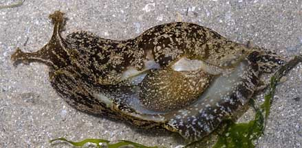
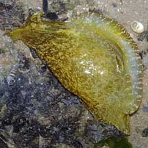
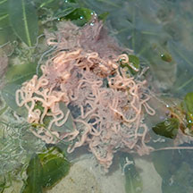
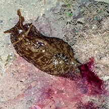
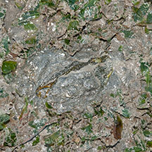
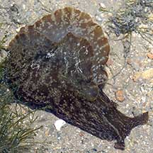
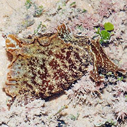
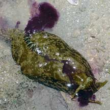
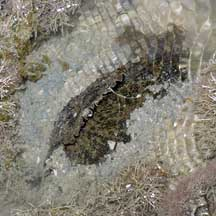

|
|
| sea hares text index | photo index |
| Phylum Mollusca > Class Gastropoda > sea slugs > Order Anaspidea |
| Spotted
sea hare Aplysia oculifera* updated May 2020 Where seen? This large spotted sea hare is sometimes seen on many of our shores, on sandy sheltered areas among or near seagrasses. Sometimes, half buried in soft sediments. Features: 8-10cm. Large, long, fleshy body smooth, brownish sometimes with a greenish or bluish, with a mottled pattern made up of tiny white spots clustered into small irregular patches. The inner surface of the 'wings' (called parapodia) has white spots which form short thin white bars along the edges. Large flappy oral tentacles, smaller rhinophores. Sometimes with a narrow white stripe along the edges of the oral tentacles, with a white stripe in the middle. It releases a purple dye when distressed. Sometimes confused with the Geographic sea hare which has a pattern of tiny white spots that form patterns with fine horizontal lines along the body. The Spotted sea hare doesn't have fine horizontal lines along the body. |
 Changi, May 11 |
 Tanah Merah, Jun 09 |
|
 Egg strings laid by the sea hare. Chek Jawa, Dec 19 |
 Releasing purple ink. Kusu Island, Mar 06 |
 Half buried in soft sediments. Pulau Ubin, May 08 |

|
*Identification needs to be confirmed. Species are difficult to positively identify without close examination.
On this website, they are grouped by external features for convenience of display.
| Spotted sea hares on Singapore shores |
On wildsingapore
flickr
|
| Other sightings on Singapore shores |
 Pulau Sekudu, May 04 |
 Tuas, Oct 12 Photo shared by Loh Kok Sheng on flickr. |
 Releasing purple dye. Kusu Island, Mar 06 |
 Half buried in sediments Kusu Island, Mar 06 |
Links
|